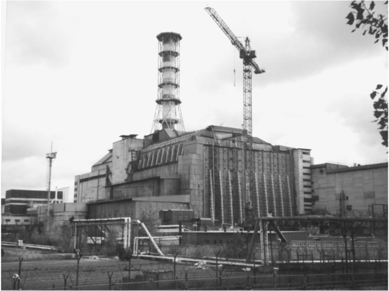

Thesis: Chernobyl caused many safety concerns around the world, but now extreme safety advances have made nuclear energy cleaner, more efficient, and safer. These improvements allow power to be more widely available and help people ultimately feel more secure about nuclear energy.
Before 1986: Confidence in Nuclear Power
Before 1986, nuclear power was expanding rapidly across the world. Many countries believed nuclear energy was the future because it produced large amounts of electricity without burning fossil fuels. The Soviet Union operated RBMK reactors, which were powerful but had design weaknesses. International safety cooperation was limited, and countries mostly regulated themselves. Although accidents such as Three Mile Island in the United States had raised concerns, many governments still believed nuclear power was manageable. This confidence would be permanently changed in April 1986.
Revolution: The Explosion at Reactor 4
Reactor 4 after the 1986 explosion. Source: International Atomic Energy Agency (IAEA).
On April 26, 1986, Reactor 4 at the Chernobyl Nuclear Power Plant exploded during a safety test. According to the U.S. Nuclear Regulatory Commission’s 1987 report, the disaster resulted from “a flawed reactor design coupled with operator error.” The RBMK reactor lacked a full containment structure, allowing radioactive material to escape into the atmosphere. The explosion released radiation across Ukraine, Belarus, and parts of Europe. This moment represents a revolution in nuclear history because it forced the world to confront the dangers of unsafe reactor design and poor oversight.
RBMK reactor design used at Chernobyl. Source: World Nuclear Association.
This RBMK diagram shows the structure that contributed to instability at low power levels. The design included graphite control rods that increased reactivity before reducing it, which made emergency shutdown more dangerous. After the explosion, engineers modified RBMK reactors to correct these flaws. The disaster exposed weaknesses not only in technology but also in government transparency, beginning global change.
Reaction: Political, Social, and Economic Impact

Original concrete sarcophagus built in 1986. Source: U.S. Government Accountability Office (GAO).
Immediately after the explosion, Soviet authorities built a massive concrete structure known as the sarcophagus to contain radiation. This urgent response showed the seriousness of the situation, but it was only a temporary solution. Politically, the Soviet government delayed informing the public, damaging trust. When radiation alarms sounded in Sweden, the international community learned about the accident. This weakened the credibility of Soviet leadership and contributed to political reforms during the late 1980s.
Socially, over 100,000 people were evacuated from nearby areas such as Pripyat. Environmental movements grew stronger across Eastern Europe. Economically, cleanup and containment cost billions of dollars. The disaster affected agriculture, energy production, and government budgets. Internationally, the accident led to new agreements requiring countries to report nuclear accidents quickly and cooperate on safety standards. The International Atomic Energy Agency expanded its safety conventions, increasing global oversight.
Reform: Safer Technology and Global Cooperation
Design of the New Safe Confinement structure. Source: U.S. Government Accountability Office (GAO).
Decades later, the New Safe Confinement was built over Reactor 4. Unlike the original sarcophagus, this structure was engineered for long-term stability and safety. It was designed through international cooperation and funded by multiple nations. This reform shows how the world responded with improved engineering and accountability.
Modern nuclear reactors now include passive safety systems that automatically cool reactors without human intervention. Countries such as France developed European Pressurized Reactors with reinforced containment buildings. China designed the Hualong One reactor with multiple safety layers and automatic shutdown features. These technological improvements reflect lessons learned from Chernobyl. International laws and inspection standards are now stricter, and transparency has increased.
Impact Today
Chernobyl transformed global nuclear policy. It demonstrated the consequences of weak oversight and flawed design. However, it also led to major reforms in technology, regulation, and international cooperation. Today’s reactors are safer because of stronger containment systems, automatic shutdown procedures, and global reporting requirements. The disaster remains a warning, but it also shows how crisis can produce reform and improvement.